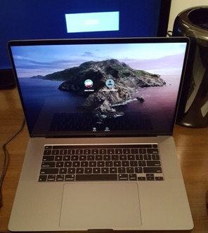
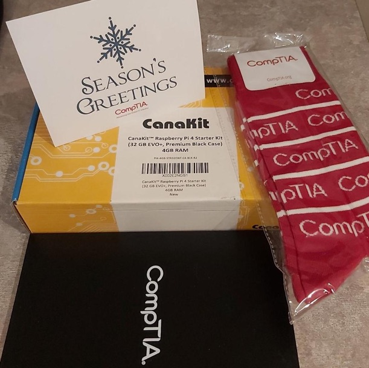
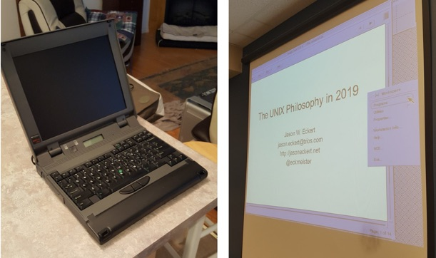
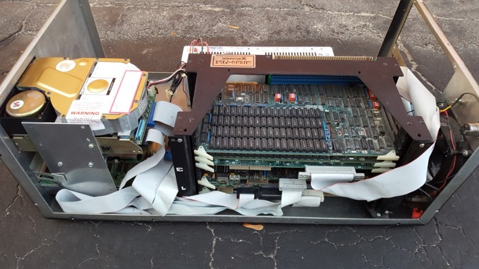
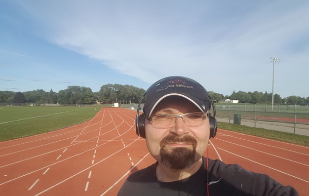
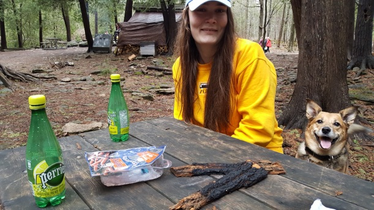
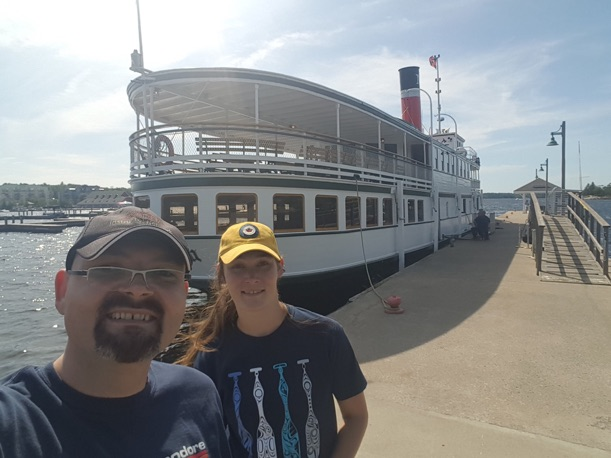
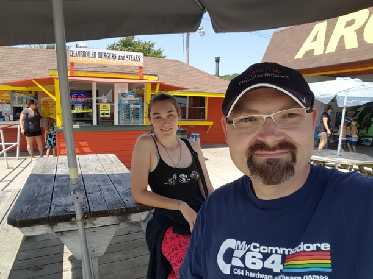
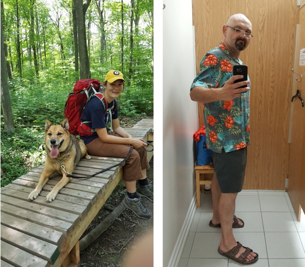

2019 in review...
Sunday, December 22, 2019
This year was flat-out awesome! I can’t think of many years in the past decade that had the same amount of academic, physical, and personal fulfillment all in one year!
On the academic side, I presented a 12-week Linux+ webinar series at night to IT instructors worldwide for the Computing Technology Industry Association (CompTIA) Instructor Network.
This, of course, fit well since I just finished writing the 5th edition of my Linux textbook for Cengage (Linux+ & LPIC Guide to Linux Certification).
The participants loved the series and material I created for them, and I was told it definitely raised the bar for these sessions! And with their votes, I won the Outstanding Train the Trainer award from CompTIA at their summit in Las Vegas!
Outside of my day job teaching and doing curriculum for our IT programs at the college, I also did a lot of tech editing and reviewing for various Linux books, as well as worked on a lot of development and devops-related projects for several startups and incubators in the Waterloo region. Because I’ve done so much of this over the past few years, I get a lot of people wanting me on their team and have the rare privilege of getting to choose what projects I want to work on. So I naturally choose the ones that are the coolest!
Oh, and I’m currently writing a book on Windows Server 2019 administration for Cengage. Since it’s also published in the National Geographic store, I guess you could say that I’m writing a book depicting Windows Server 2019 in its natural habitat ;-)


On the computing side, I got an expensive status symbol - the new 16” MacBook Pro with the highest available specs (Core i9, 64GB RAM, 8TB SSD) to help make some *stuff* happening at work a lot more palatable.
It’s the first laptop from Apple in a very long time that actually has a functional keyboard (with an Esc key!), and proper cooling so that the i9 doesn’t thermal throttle. It’s probably also the first time ever that Apple listened to customer complains about their products too ;-)
Ironically, it’s still slower for my devops work (VMs, containers, dev tools) compared to my Thinkpad P52S. Plus the Thinkpad still has a far better keyboard and build quality. My goal now is to fill that storage!

I also received a surprise gift this month from CompTIA with a Raspberry Pi 4 kit. While many of my peers rave about Raspberry Pis, I’ve never played with one before. And it was a real eye-opener. They run Linux surprisingly fast. Browsing the Web with Chromium is as fast as on a PC, and 4K content displays perfectly. Plus, the templates for taking advantage of the GPIO port are brilliant, and easy to code around in Python.

On the vintage computing side, I picked up a couple of really cool ancient UNIX systems. The first one is a SPARCbook 3000ST, which was a $20K laptop from the 90s that every UNIX geek wanted (it had a SPARC processor running Solaris UNIX). Since it has VGA output, I even did a presentation with it (irony is not dead):

The second one is an ancient UNIX workstation with a NS32016 CPU (the first 32-bit general purpose microprocessor) running Genix (BSD UNIX for the NS32016). To my knowledge, this is the only Genix system left in the world! I’m currently restoring it to its former glory.

On the personal side, I still eat well and get plenty of exercise. I walk everywhere and count calories. I ran a marathon in Toronto in May - my feet spent a week recovering, but I loved it! Plus, it definitely helps that I live right next to a running track (you can just see my house in the distance between the trees):

But perhaps the coolest part of this year was my taking 4 weeks off this summer to do some amazing day trips with my daughter before she left for Australia for a 1-year work term. We did a lot of hiking, saw a lot of waterfalls, and explored some amazing places all around Ontario, some of them accidental (like the HMCS Ojibwa submarine used to track Soviet vessels during the Cold War). Plus, I even broke down and bought a Hawaiian shirt like all the hip young people wear ;-)





While I had a pretty amazing year, I hope that you did too!
Here’s to a healthy and prosperous 2020 for everyone!
:wq